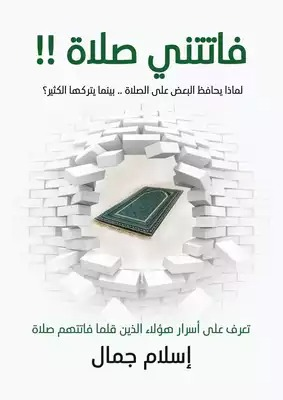

تأليف هشام جمال
يتناول الكتاب موضوع الصلاة من منظور نفسي وروحي، حيث يطرح تساؤلات حول الأسباب التي تجعل البعض يحافظون على صلاتهم بينما يتهاون فيها آخرون يسعى المؤلف إلى تقديم حلول عملية تساعد القارئ على التغلب على العقبات التي تحول دون الالتزام بالصلاة
أبرز محاور الكتاب
التعرف على الله قبل الصلاة:
يشدد الكاتب على أن معرفة الله بأسمائه
وصفاته تزرع في القلب حبًا وشوقًا للصلاة،
مما يجعلها يسيرة وخفيفة على النفس
الصفة المُعجزة:
يشير إلى أن الناجحين في حياتهم يلتزمون بعادات معينة،
ومن بينها المحافظة على الصلاة،
مما يعكس أثرها الإيجابي على النفس والسلوك
كن صباحًا:
يبرز أهمية صلاة الفجر ودورها في بدء اليوم بنشاط وبركة،
مستشهدًا بحديث النبي صلى الله عليه وسلم:
"اللهم بارك لأمتي في بكورها"